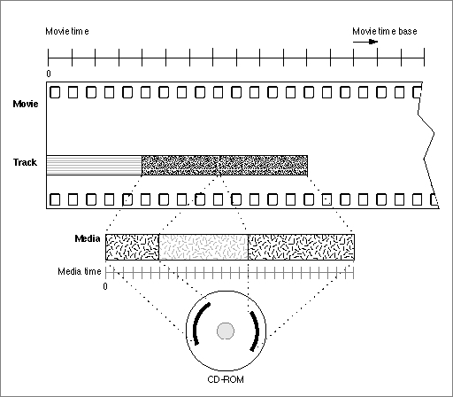

Media Structures
A media describes the data for a track. The data is not actually stored in the media. Rather, the media contains references to its media data, which may be stored in disk files, on CD-ROM discs, or other appropriate storage devices. Note that the data referred to by one media may be used by more than one movie, though the media itself is not reused.Each media has its own time coordinate system, which defines the media's time scale and duration. A media's time coordinate system always starts at time 0, and it is independent of the time coordinate system of the movie that uses its data. Tracks map data from the movie's time coordinate system to the media's time coordinate system. Figure 2-7 shows how tracks perform this mapping.
Each supported data type has its own media handler. The media handler interprets the media's data. The media handler must be able to randomly access the data and play segments at rates specified by the movie. The track determines the order in which the media is played in the movie and maps movie time values to media time values.
Figure 2-8 shows the final link to the data. The media in the figure references digital video frames on a CD-ROM disc.
Figure 2-8 A media and its data
